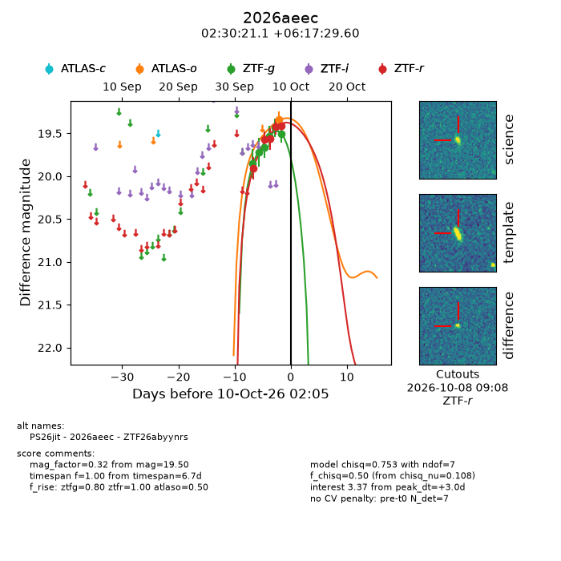
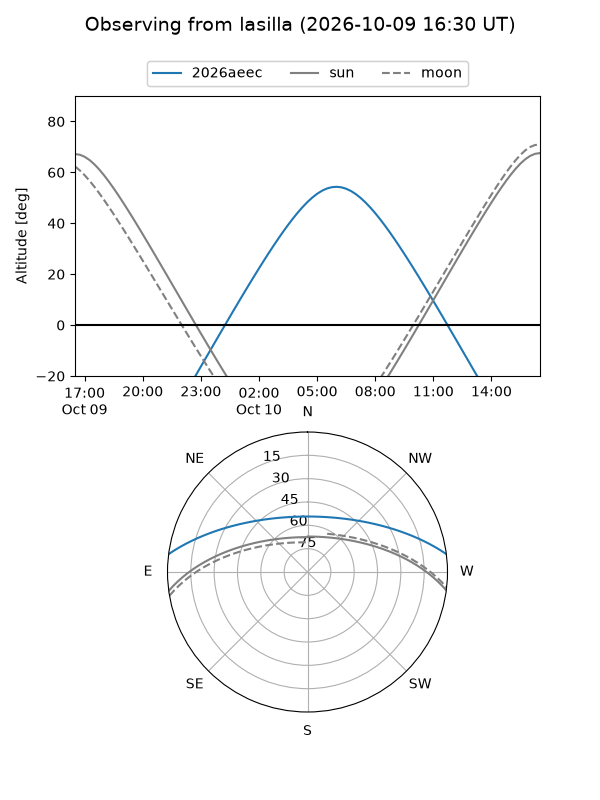
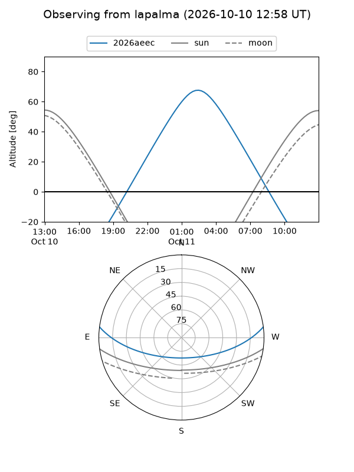
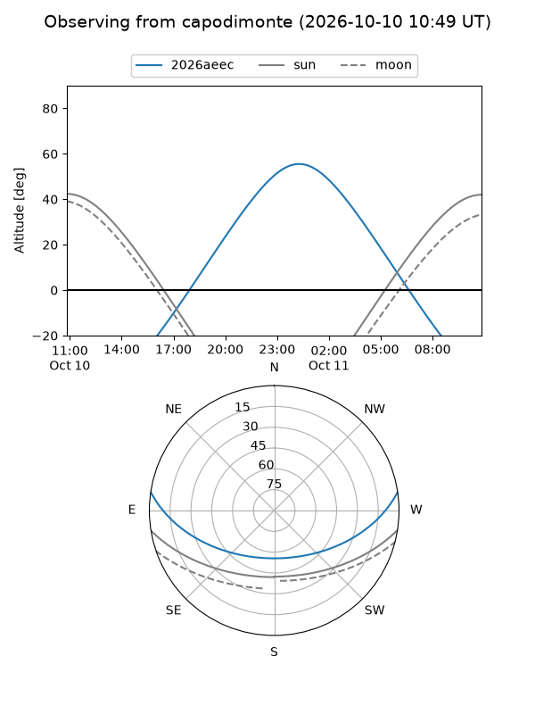
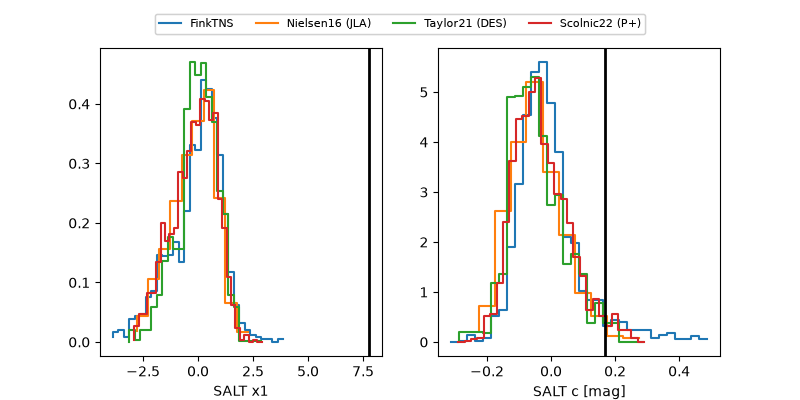

2026aeec
Target 2026aeec at 2026-10-10 14:06
Aliases and brokers:
FINK-ZTF: ztf.fink-portal.org/ZTF26abyynrs
Lasair-ZTF: lasair-ztf.lsst.ac.uk/objects/ZTF26abyynrs
ALeRCE-ZTF: alerce.online/object/ZTF26abyynrs
YSE-PZ: ziggy.ucolick.org/yse/transient_detail/2026aeec
TNS name: wis-tns.org/object/2026aeec
Direct TNS query: direct search
alt names
ZTF26abyynrs (ztf,fink_ztf)
2026aeec (tns,yse)
PS26jit (panstarrs)
Coordinates:
equatorial (ra, dec) = 37.5880,+6.29155
equatorial (HMS+DMS) = 02:30:21.13,+06:17:29.60
galactic (l, b) = (162.1658,-48.89770)
Flags:
peak dt: +3.5
Photometry:
last atlaso=19.34, ztfg=19.50, ztfr=19.41
1 atlaso, 6 ztfg, 5 ztfr detections
Lightcurve

Visibility



Additional plots
